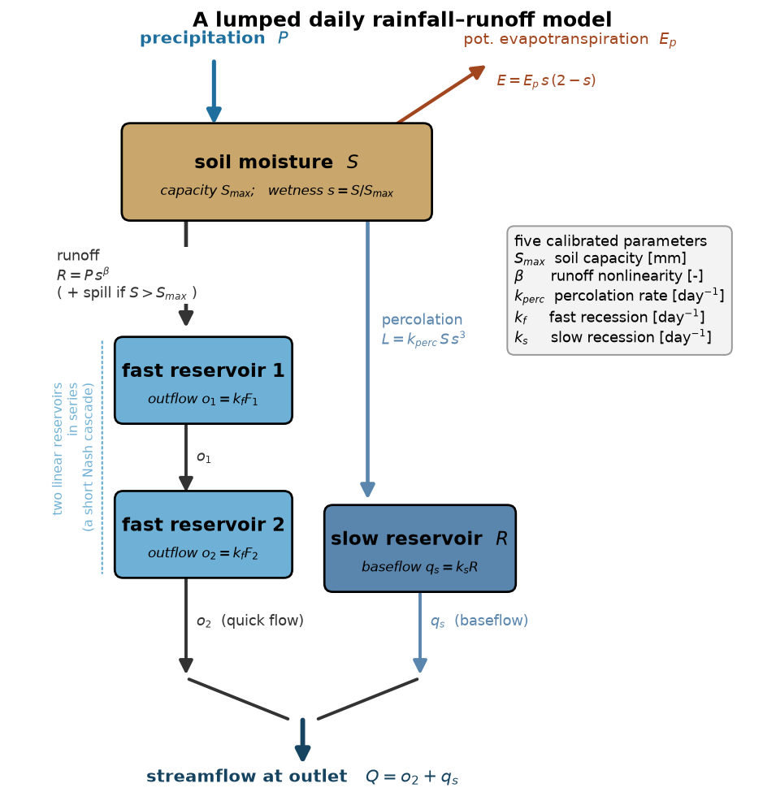
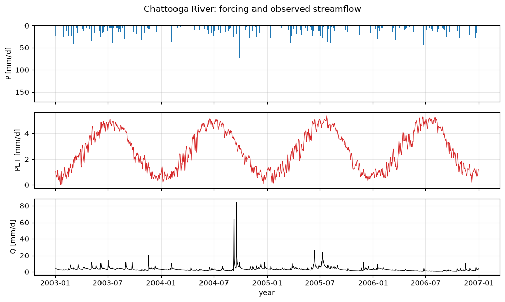
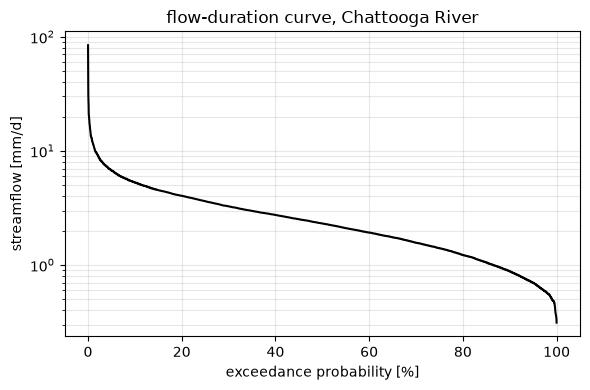
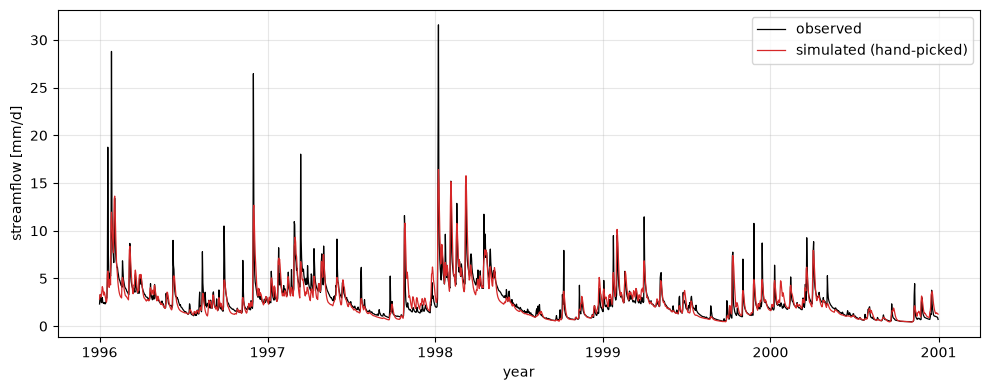
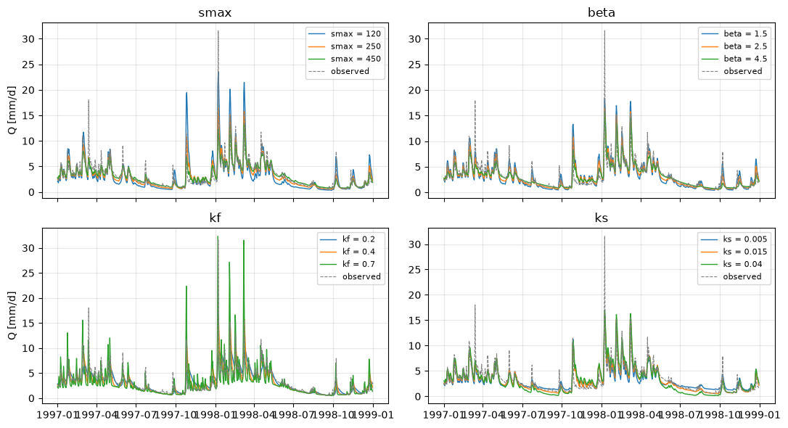

Lecture 7, A lumped hydrological model#
Lectures 4 to 6 wrote an ordinary differential equation for the energy stored at a
point on the Earth and stepped it forward in time. This lecture does exactly the same
thing for the water stored in a river catchment. The state variable changes from a
temperature to a set of water storages, but the machinery — a balance equation,
a few parameters, a time-stepping loop, a class that holds the state — is the
one you already know.
A model that treats the whole catchment as a single unit, with no spatial detail, is called a lumped model. In the language of the rest of the course it is a zero-dimensional model of the water cycle, and it is the first entry in Module 2’s hierarchy of hydrological models, below the semi-distributed and distributed models (SWAT, VIC, HEC-HMS) that resolve space.
# --- Google Colab setup ---
import sys
if "google.colab" in sys.modules:
%pip install -q numpy pandas matplotlib scipy
import numpy as np
import pandas as pd
import matplotlib.pyplot as plt
1) The catchment water balance#
Write \(S(t)\) for the total water stored in a catchment — in the soil, in shallow groundwater, in channels. Over any interval it changes by what comes in minus what goes out:
where \(P\) is precipitation, \(E\) is actual evapotranspiration, and \(Q\) is streamflow at the outlet. This is the hydrological twin of the energy balance $C,dT/dt = \text{ASR}
\text{OLR} + \dots$ of Lecture 4.
Everything is expressed as a depth over the catchment area, in millimetres per day: a discharge of \(Q\) m³ s⁻¹ from a catchment of area \(A\) m² is \(Q \times 86400 / A \times 1000\) mm day⁻¹. Working in mm keeps \(P\), \(E\) and \(Q\) on the same footing and makes the balance easy to check.
The lumped assumption is that one value of \(P\), one soil moisture, one groundwater level and so on describe the entire catchment. That is clearly wrong in detail, but for predicting the streamflow at the outlet it is often good enough, and it keeps the model small enough to understand and to calibrate.
2) A model structure#
\(P\), \(E\) and \(Q\) do not act on a single store. Rain first wets the soil; only when the soil is wet does much of it become runoff; and that runoff reaches the outlet by two routes — a fast near-surface path and a slow groundwater path that sustains flow between storms. The smallest structure that captures this has three kinds of store:
a soil-moisture store \(S\) of capacity \(S_{max}\);
a fast pathway, two identical linear reservoirs in series (a short Nash cascade), which delays and smooths the storm response;
a slow pathway, one linear reservoir, which produces baseflow.
Each day, given \(P\) and potential evapotranspiration \(E_p\):
The fast reservoirs receive \(R\), the slow reservoir receives \(L\), and each linear reservoir releases a fixed fraction of its content per day: \(q = k\,\text{(store)}\). Total streamflow is the sum of the fast and slow outflows.
The five parameters are
symbol |
meaning |
units |
|---|---|---|
\(S_{max}\) |
soil-moisture capacity |
mm |
\(\beta\) |
runoff-generation nonlinearity |
– |
\(k_{perc}\) |
percolation rate, soil → groundwater |
day⁻¹ |
\(k_f\) |
fast-reservoir recession |
day⁻¹ |
\(k_s\) |
slow-reservoir recession |
day⁻¹ |
The model at a glance#
{kind=link}

Fig. 14 The model as stores (boxes) and fluxes (arrows). Rain enters the soil-moisture store \(S\); a fraction \(R = P\,s^{\beta}\) runs off to the fast pathway and a slower trickle \(L = k_{perc}\,S\,s^{3}\) percolates to the slow (groundwater) reservoir, while actual evapotranspiration \(E\) leaves the soil to the atmosphere. The fast pathway is two linear reservoirs in series, the slow pathway one; their outflows add to the streamflow \(Q\) at the outlet. Figure: this course.#
class Catchment:
"""A lumped daily rainfall-runoff model.
One soil-moisture store feeds a fast pathway (two linear reservoirs in series)
and a slow pathway (one linear reservoir).
"""
def __init__(self, smax=250.0, beta=2.5, kperc=0.05, kf=0.4, ks=0.015):
self.smax = smax # soil-moisture capacity [mm]
self.beta = beta # runoff-generation nonlinearity [-]
self.kperc = kperc # percolation rate [1/day]
self.kf = kf # fast-reservoir recession [1/day]
self.ks = ks # slow-reservoir recession [1/day]
def run(self, prcp, pet, s0=0.5, return_stores=False):
smax, beta, kperc = self.smax, self.beta, self.kperc
kf, ks = self.kf, self.ks
prcp = np.asarray(prcp, float)
pet = np.asarray(pet, float)
S = s0 * smax # soil moisture
F1 = F2 = R = 0.0 # fast cascade (2) and slow reservoir
n = len(prcp)
q = np.empty(n)
total_store = np.empty(n)
for t in range(n):
p, ep = prcp[t], pet[t]
s = min(max(S / smax, 0.0), 1.0)
runoff = p * s ** beta # saturation-excess generation
aet = ep * s * (2.0 - s) # actual evapotranspiration
S = S + p - runoff - aet
if S > smax: # spill excess
runoff += S - smax
S = smax
if S < 0.0: # cannot dry below zero
aet += S
S = 0.0
perc = kperc * S * s ** 3 # drainage to groundwater
S -= perc
F1 += runoff
R += perc
o1 = kf * F1; F1 -= o1 # linear-reservoir outflows
F2 += o1
o2 = kf * F2; F2 -= o2
qs = ks * R; R -= qs
q[t] = o2 + qs
total_store[t] = S + F1 + F2 + R
return (q, total_store) if return_stores else q
3) The data#
We use one catchment: the Chattooga River near Clayton, Georgia (USGS gauge
02177000), a forested, humid, near-natural basin of about 540 km² in the southern
Appalachians — one of the reference catchments in the CAMELS large-sample
dataset. The daily record in data/chattooga_daily.csv runs 1991–2015 and holds
prcp_mm— precipitation (Daymet v4)tmean_c— mean air temperature (Daymet v4)pet_mm— potential evapotranspiration, Oudin (2005) estimate from temperatureq_mm— observed streamflow (USGS), converted to mm day⁻¹
Sources and licences are listed at the end of the notebook.
df = pd.read_csv("data/chattooga_daily.csv", comment="#",
parse_dates=["date"], index_col="date")
print(df.describe().round(2))
annual = df.resample("YS").sum(min_count=350)
print("\nlong-term annual means [mm/yr]:")
print(f" P = {annual['prcp_mm'].mean():6.0f}")
print(f" PET = {annual['pet_mm'].mean():6.0f}")
print(f" Q = {annual['q_mm'].mean():6.0f}")
print(f" runoff ratio Q/P = {annual['q_mm'].mean()/annual['prcp_mm'].mean():.2f}")
prcp_mm tmean_c pet_mm q_mm
count 9131.00 9131.00 9131.00 9131.00
mean 4.77 14.94 2.67 2.88
std 11.00 7.84 1.57 2.59
min 0.00 -9.38 0.00 0.31
25% 0.00 8.54 1.18 1.40
50% 0.00 15.53 2.53 2.31
75% 4.58 22.12 4.18 3.62
max 164.37 29.28 5.80 84.42
long-term annual means [mm/yr]:
P = 1742
PET = 974
Q = 1051
runoff ratio Q/P = 0.60
fig, ax = plt.subplots(3, 1, figsize=(10, 6), sharex=True)
sl = slice("2003", "2006")
ax[0].bar(df.loc[sl].index, df.loc[sl, "prcp_mm"], width=1, color="tab:blue")
ax[0].set_ylabel("P [mm/d]"); ax[0].invert_yaxis()
ax[1].plot(df.loc[sl].index, df.loc[sl, "pet_mm"], color="tab:red", lw=0.8)
ax[1].set_ylabel("PET [mm/d]")
ax[2].plot(df.loc[sl].index, df.loc[sl, "q_mm"], color="black", lw=0.8)
ax[2].set_ylabel("Q [mm/d]"); ax[2].set_xlabel("year")
for a in ax:
a.grid(alpha=0.3)
fig.suptitle("Chattooga River: forcing and observed streamflow")
fig.tight_layout()

The streamflow record has the shape every hydrologist recognises: sharp peaks a day or two after heavy rain, riding on a smooth baseflow that rises through winter and recedes through the dry late summer. A model that reproduces this needs both a fast and a slow pathway, which is why the structure above has two.
A compact summary of the flow regime is the flow-duration curve — streamflow sorted from largest to smallest against the fraction of time it is exceeded.
q = df["q_mm"].dropna().sort_values(ascending=False).values
p_exc = np.arange(1, len(q) + 1) / (len(q) + 1)
fig, ax = plt.subplots(figsize=(6, 4))
ax.semilogy(p_exc * 100, q, color="black")
ax.set_xlabel("exceedance probability [%]")
ax.set_ylabel("streamflow [mm/d]")
ax.set_title("flow-duration curve, Chattooga River")
ax.grid(alpha=0.3, which="both")
fig.tight_layout()

4) A first simulation#
Pick a plausible parameter set by hand, force the model with the observed \(P\) and \(E_p\), and compare its streamflow with the gauge. We discard the first two years as warm-up: the model starts from a guessed soil moisture and needs time to forget it.
model = Catchment(smax=250.0, beta=2.5, kperc=0.05, kf=0.40, ks=0.015)
qsim = model.run(df["prcp_mm"].values, df["pet_mm"].values, s0=0.5)
df["qsim_hand"] = qsim
show = slice("1996", "2000")
fig, ax = plt.subplots(figsize=(10, 4))
ax.plot(df.loc[show].index, df.loc[show, "q_mm"], color="black", lw=0.9, label="observed")
ax.plot(df.loc[show].index, df.loc[show, "qsim_hand"], color="tab:red", lw=0.9,
label="simulated (hand-picked)")
ax.set_ylabel("streamflow [mm/d]"); ax.set_xlabel("year")
ax.legend(); ax.grid(alpha=0.3)
fig.tight_layout()
def nse(obs, sim):
m = np.isfinite(obs) & np.isfinite(sim)
o, s = obs[m], sim[m]
return 1.0 - np.sum((s - o) ** 2) / np.sum((o - o.mean()) ** 2)
ev = df.loc["1993":] # drop warm-up
print(f"Nash-Sutcliffe efficiency (1993-2015): {nse(ev['q_mm'].values, ev['qsim_hand'].values):.2f}")
Nash-Sutcliffe efficiency (1993-2015): 0.64

The hand-picked run already gets the timing of the storm peaks and the general level of baseflow, but it misses peak magnitudes and the shape of the recessions. Lecture 8 is about finding the parameter values that fit best, and about being honest regarding how good “best” really is.
5) What each parameter does#
The quickest way to build intuition is to vary one parameter at a time around the hand-picked set and watch the hydrograph respond.
base = dict(smax=250.0, beta=2.5, kperc=0.05, kf=0.40, ks=0.015)
sweeps = {
"smax": [120, 250, 450],
"beta": [1.5, 2.5, 4.5],
"kf": [0.20, 0.40, 0.70],
"ks": [0.005, 0.015, 0.04],
}
win = slice("1997", "1998")
P = df["prcp_mm"].values; Ep = df["pet_mm"].values
t = df.index
fig, axes = plt.subplots(2, 2, figsize=(11, 6), sharex=True)
for ax, (name, values) in zip(axes.flat, sweeps.items()):
for v in values:
pars = dict(base); pars[name] = v
qs = pd.Series(Catchment(**pars).run(P, Ep), index=t)
ax.plot(qs.loc[win].index, qs.loc[win], lw=1.0, label=f"{name} = {v}")
ax.plot(df.loc[win].index, df.loc[win, "q_mm"], color="0.5", lw=0.8, ls="--",
label="observed")
ax.set_title(name); ax.legend(fontsize=8); ax.grid(alpha=0.3)
axes[1, 0].set_ylabel("Q [mm/d]"); axes[0, 0].set_ylabel("Q [mm/d]")
fig.tight_layout()

\(S_{max}\) sets how much rain the soil can soak up before it spills: a small \(S_{max}\) makes the catchment flashy, a large one damps every event.
\(\beta\) controls how sharply runoff switches on as the soil wets — large \(\beta\) means almost nothing runs off until the soil is nearly full, then it all does.
\(k_f\) is the fast recession: large \(k_f\) empties the fast reservoirs quickly and gives sharp, short peaks.
\(k_s\) is the slow recession: it sets how fast baseflow declines through the dry season, and barely touches the peaks.
Each parameter has a distinct fingerprint on the hydrograph. That is what makes calibration possible — and, where two parameters have similar fingerprints, what makes it hard (Lecture 8).
6) Does the water balance close?#
A model can produce a plausible-looking hydrograph and still leak water. Over a long run, with the change in storage \(\Delta S\) accounted for, precipitation must equal the sum of actual evapotranspiration, streamflow, and the storage change.
q_sim, store = Catchment(**base).run(P, Ep, s0=0.5, return_stores=True)
# recompute actual ET for the same run
S = 0.5 * base["smax"]; aet_series = np.empty(len(P))
for i in range(len(P)):
s = min(max(S / base["smax"], 0.0), 1.0)
runoff = P[i] * s ** base["beta"]
aet = Ep[i] * s * (2 - s)
S = S + P[i] - runoff - aet
if S > base["smax"]:
S = base["smax"]
if S < 0:
aet += S; S = 0.0
S -= base["kperc"] * S * s ** 3
aet_series[i] = aet
P_tot = P.sum()
E_tot = aet_series.sum()
Q_tot = q_sim.sum()
dS = store[-1] - store[0]
print(f"P = {P_tot:9.0f} mm")
print(f"E (actual) = {E_tot:9.0f} mm")
print(f"Q = {Q_tot:9.0f} mm")
print(f"delta storage= {dS:9.0f} mm")
print(f"P - (E + Q + dS) = {P_tot - (E_tot + Q_tot + dS):.2f} mm (should be ~0)")
P = 43551 mm
E (actual) = 17694 mm
Q = 25556 mm
delta storage= 303 mm
P - (E + Q + dS) = -0.56 mm (should be ~0)
The residual is a rounding-level number: the model conserves water, which every hydrological model must. It is worth adding this check to any model you build.
Exercises#
Worked, scaffolded exercises for this lecture — the data, model and plots are provided and the code to fill in is marked — are in Exercise 7.
Sources#
Data. Streamflow: U.S. Geological Survey, National Water Information System, gauge 02177000 (public domain). Precipitation and temperature: Daymet v4, ORNL DAAC (public domain; Thornton et al. 2022, doi:10.3334/ORNLDAAC/2129). Potential evapotranspiration: Oudin, L. et al. (2005), Journal of Hydrology 303, 290–306. The catchment is part of the CAMELS dataset (Newman et al. 2015; Addor et al. 2017).
Tools. This notebook builds the model from scratch for teaching. For real work, established Python packages implement calibrated, tested versions of models like GR4J, HBV and HYMOD — for example LuMod (S. Arciniega-Esparza) and SPOTPY (Houska et al.) for calibration and uncertainty analysis.
Licensing. Original teaching material for this course; text under CC BY-SA 4.0, code additionally under the MIT License, consistent with the rest of the book. See CREDITS.md.